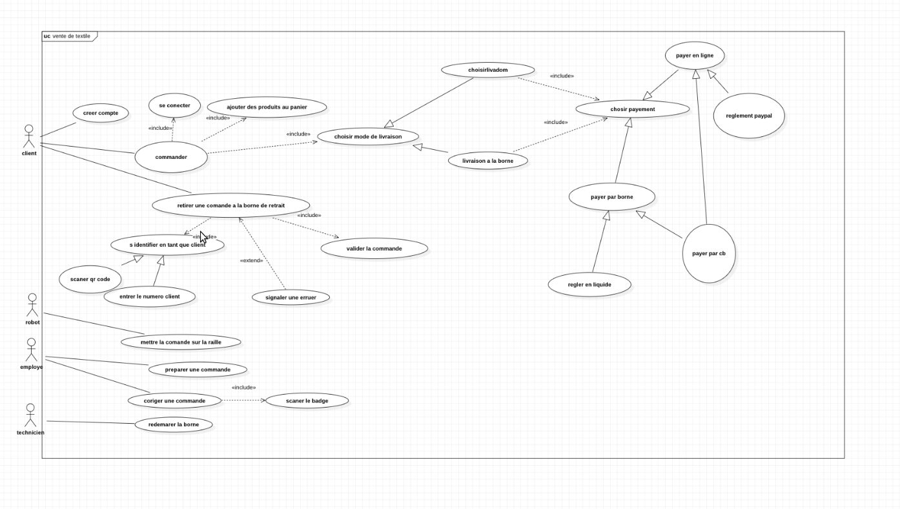
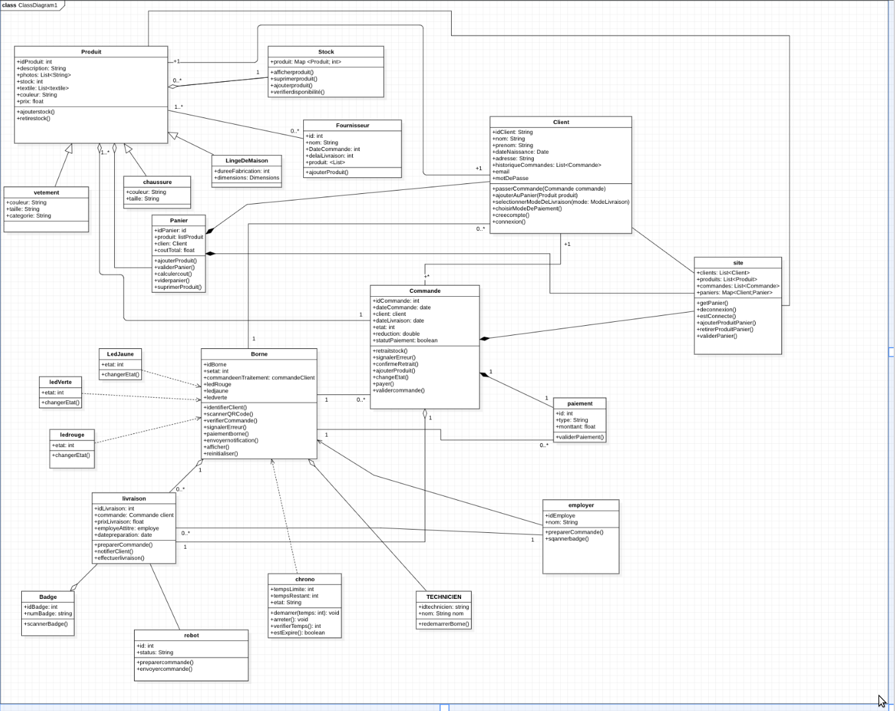
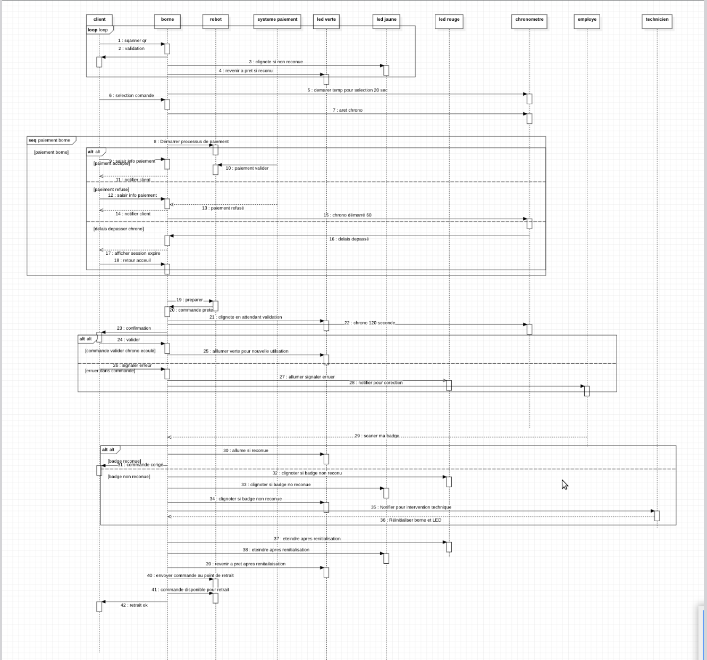
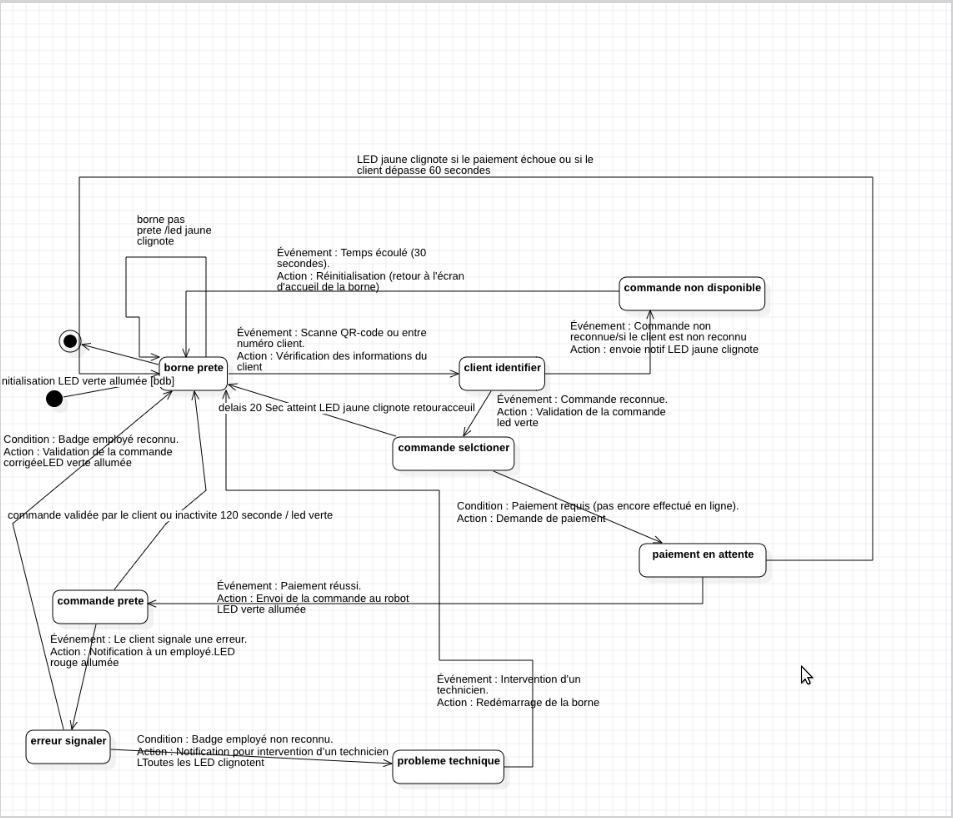

Présentation
Ce projet de modélisation a été réalisé dans le cadre du cours de Modélisation Objet UML. Il s'agit de concevoir un système de gestion d'une entreprise textile à travers plusieurs diagrammes UML représentant différents aspects du système.
Objectifs
- Modéliser les interactions principales avec les acteurs externes (diagramme de cas d'utilisation).
- Décrire les transitions d'états d’un objet clé (diagramme d’états).
- Modéliser le comportement dynamique (diagramme de séquence).
- Concevoir la structure du système avec le diagramme de classes.
Diagrammes UML
Diagramme de cas d'utilisation

Diagramme de classe

Diagramme de séquence

Diagramme d’états

Retour